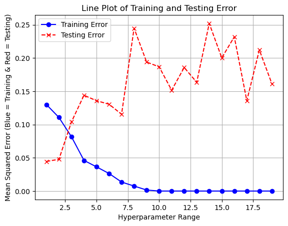
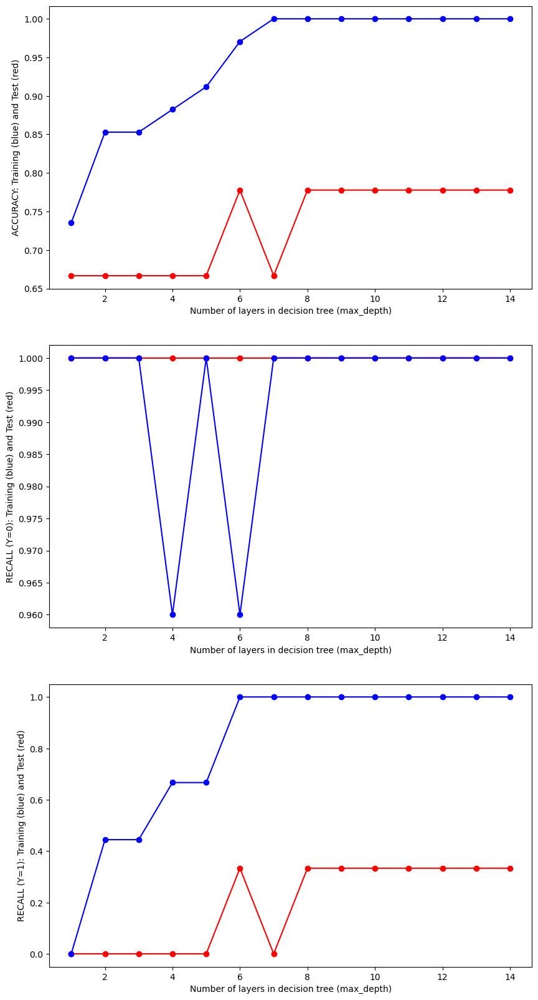
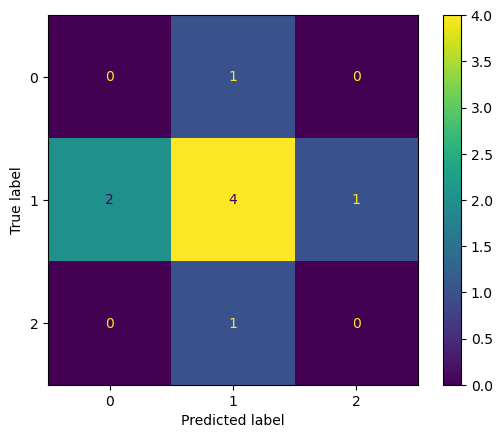

Note: You should remove these instruction once you have read and understood them. They should not be included in your final submission.
Remember: Exactly what do you put on this page will be specific you your project and data. Some things might “make more sense” on one page rather than another, depending on your workflow. Organize your project in a logical way that makes the most sense to you.
Suggested page structure
Here’s one suggested structure for organizing your technical pages. You can adjust this as needed:
Audience:Remember that these are written for a technical audience. Assume they have completed the DSAN program, but would appreciate refreshers of the important concepts.
Introduction and Motivation: Briefly outline your plan. What are you doing on this page, and why? Provide context and explain the goals of your analysis.
Overview of Methods: Give a concise explanation of the methods used. For example, if using K-Means clustering, describe what it is, how it works, the inputs and outputs, and key hyperparameters.
Code: Include the code you used to implement your workflow.
Summary and Interpretation of Results: Summarize your findings, interpret the results, and discuss their technical implications.
What to address
The following is a list of some of the things you should address on this page. This list is not exhaustive, and you should use your judgment to decide what is most relevant to your project.
Please do some form of “Feature selection” in your project and include a section on it. Discuss the process you went through to select the features that you used in your model, this should be done for both classification models and regression models. What did you include and why? What did you exclude? What was the reasoning behind your decisions? This section can be included here, or you can make a new page in the dropdown menu for it.
Please break this page into a “regression” section, “binary classification” section, and a “Multi-class classification” section. For each case you should try multiple methods, including those discussed in class, and compare and contrast their preformance and results.
Data Preprocessing
Normalization or Standardization: Apply techniques to scale the data appropriately.
Feature Selection or Extraction: Identify and select the most relevant features for your analysis.
Encoding Categorical Variables: Convert categorical variables into a suitable format for modeling.
Model Selection
Model Rationale: Explain the reasons for selecting specific models or algorithms.
Overview of Algorithms: Provide a brief overview of the algorithms used
Training and Testing Strategy
Split Methods: Detail the splitting methods used (e.g., train-test split, cross-validation).
Dataset Proportions: Specify the proportions used for splitting the dataset.
Model Evaluation Metrics
Binary Classification Metrics: Discuss metrics such as accuracy, precision, recall, F1 score, and ROC-AUC.
Multiclass Classification Metrics: Include metrics such as confusion matrix and macro/micro F1 score.
Regression Metrics: Explain metrics such as RMSE, MAE, and R-squared, parity plots, etc.
Results
Model Performance Summary: Provide a summary of the model’s performance.
Visualizations: Include visualizations of results (e.g., ROC curves, feature importance plots).
Discussion
Result Interpretation: Interpret the results obtained from the analysis.
Model Performance Comparison: Compare the performance of different models.
Insights Gained: Share insights learned from the analysis.
Code
Provide the source code used for this section of the project here.
If you’re using a package for code organization, you can import it at this point. However, make sure that the actual workflow steps—including data processing, analysis, and other key tasks—are conducted and clearly demonstrated on this page. The goal is to show the technical flow of your project, highlighting how the code is executed to achieve your results.
If relevant, link to additional documentation or external references that explain any complex components. This section should give readers a clear view of how the project is implemented from a technical perspective.
Remember, this page is a technical narrative, NOT just a notebook with a collection of code cells, include in-line Prose, to describe what is going on.
Regression Tree
## Make a Regression Tree that predicts the sentiment of a bike path given mileage and other binary variablesfrom sklearn.tree import DecisionTreeRegressor, DecisionTreeClassifier, plot_treefrom sklearn.model_selection import train_test_splitfrom sklearn.metrics import mean_squared_errorfrom sklearn.metrics import accuracy_scorefrom sklearn.metrics import precision_scorefrom sklearn.metrics import recall_scorefrom sklearn.metrics import confusion_matrix, ConfusionMatrixDisplayimport numpy as npimport pandas as pdimport seaborn as snsimport matplotlib.pyplot as pltdf = pd.read_csv('../../data/processed-data/dc_bike_routes.csv')Y = df['sentiment']X = df.iloc[:, 2:12]x_train, x_test, y_train, y_test = train_test_split(X, Y, test_size =0.2, random_state =0)y_train = y_trainy_test = y_testhyper_parameters = []train_error = []test_error = []# Optimize Hyperparameterfor value inrange(1,20): model = DecisionTreeRegressor(max_depth = value) model.fit(x_train, y_train) yp_train = model.predict(x_train) yp_test = model.predict(x_test) train_error_sample = mean_squared_error(y_train, yp_train) test_error_sample = mean_squared_error(y_test, yp_test) hyper_parameters.append(value) train_error.append(train_error_sample) test_error.append(test_error_sample)# Plot the dataplt.plot(hyper_parameters, train_error, label="Training Error", color="blue", linestyle="-", marker="o")plt.plot(hyper_parameters, test_error, label="Testing Error", color="red", linestyle="--", marker="x")# Add labels and titleplt.xlabel("Hyperparameter Range")plt.ylabel("Mean Squared Error (Blue = Training & Red = Testing)")plt.title("Line Plot of Training and Testing Error")# Add a legendplt.legend()# Show the plotplt.grid(True)plt.show()

# Make the best model and output the errorsmodel_best = DecisionTreeRegressor(max_depth =2)model_best.fit(x_train, y_train)yp_train = model_best.predict(x_train)yp_test = model_best.predict(x_test)train_error_best = mean_squared_error(y_train, yp_train)test_error_best = mean_squared_error(y_test, yp_test)print("Training Error:", train_error_best)print("Testing Error:", test_error_best)
Training Error: 0.11066305675070028
Testing Error: 0.047755677369614516
Classification Tree
# Functions for displaying accuracy and the model# Confusion Plot to visualize accuracy of the model later ondef confusion_plot(y_data, y_pred):# Calculate and print accuracy accuracy = accuracy_score(y_data, y_pred)print("ACCURACY:", accuracy) neg_recall = recall_score(y_data ==0, (y_pred ==0)) neg_precision = precision_score((y_data) ==0, (y_pred ==0)) pos_recall = recall_score((y_data) ==1, (y_pred ==1)) pos_precision = precision_score((y_data) ==1, (y_pred ==1))print("NEGATIVE RECALL (Y=0):", neg_recall)print("NEGATIVE PRECISION (Y=0):", neg_precision)print("POSITIVE RECALL (Y=1):", pos_recall)print("POSITIVE PRECISION (Y=1):", pos_precision) conf_matrix = confusion_matrix(y_data, y_pred)print(conf_matrix) disp = ConfusionMatrixDisplay(confusion_matrix=conf_matrix) disp.plot() plt.show()# Display a treedef display_tree(model, X, Y): fig = plt.figure(figsize=(25, 20)) plot_tree( model, class_names=[str(c) for c in Y.unique()], filled=True ) plt.show()
# Now let's build a classification tree to try and predict the state in which a bike trail starts in given all numerical/binary featuresY_class = df['state1']X_class = df.iloc[:, 2:13]x_train, x_test, y_train, y_test = train_test_split(X_class, Y_class, test_size =0.2, random_state =0)test_results=[]train_results=[]for num_layer inrange(1,15): model = DecisionTreeClassifier(max_depth=num_layer) model = model.fit(x_train, y_train) yp_train=model.predict(x_train) yp_test=model.predict(x_test) test_results.append([num_layer,accuracy_score(y_test, yp_test)]) train_results.append([num_layer,accuracy_score(y_train, yp_train)])fig, axes = plt.subplots(nrows=1, ncols=1, figsize=(10, 5))axes.plot(range(1,15),[result[1] for result in test_results],'-or')axes.plot(range(1,15),[result[1] for result in train_results],'-ob')axes.set_xlabel('Number of layers in decision tree (max_depth)')axes.set_ylabel('ACCURACY: Training (blue) and Test (red)')# Show the plotsplt.show()

# Build the optimal model and display the confusion matrix to show accuracy. Display the treemodel_best = DecisionTreeClassifier(max_depth =2)model_best = model_best.fit(x_train, y_train)yp_train=model.predict(x_train)yp_test=model.predict(x_test)print("------TRAINING------")confusion_plot(y_train,yp_train)print("------TEST------")confusion_plot(y_test,yp_test)display_tree(model_best, X_class, Y_class)
c:\Users\Chase\anaconda3\Lib\site-packages\sklearn\metrics\_classification.py:1344: UndefinedMetricWarning: Recall is ill-defined and being set to 0.0 due to no true samples. Use `zero_division` parameter to control this behavior.
_warn_prf(average, modifier, msg_start, len(result))
c:\Users\Chase\anaconda3\Lib\site-packages\sklearn\metrics\_classification.py:1344: UndefinedMetricWarning: Precision is ill-defined and being set to 0.0 due to no predicted samples. Use `zero_division` parameter to control this behavior.
_warn_prf(average, modifier, msg_start, len(result))
c:\Users\Chase\anaconda3\Lib\site-packages\sklearn\metrics\_classification.py:1344: UndefinedMetricWarning: Recall is ill-defined and being set to 0.0 due to no true samples. Use `zero_division` parameter to control this behavior.
_warn_prf(average, modifier, msg_start, len(result))
c:\Users\Chase\anaconda3\Lib\site-packages\sklearn\metrics\_classification.py:1344: UndefinedMetricWarning: Precision is ill-defined and being set to 0.0 due to no predicted samples. Use `zero_division` parameter to control this behavior.
_warn_prf(average, modifier, msg_start, len(result))
c:\Users\Chase\anaconda3\Lib\site-packages\sklearn\metrics\_classification.py:1344: UndefinedMetricWarning: Recall is ill-defined and being set to 0.0 due to no true samples. Use `zero_division` parameter to control this behavior.
_warn_prf(average, modifier, msg_start, len(result))
c:\Users\Chase\anaconda3\Lib\site-packages\sklearn\metrics\_classification.py:1344: UndefinedMetricWarning: Precision is ill-defined and being set to 0.0 due to no predicted samples. Use `zero_division` parameter to control this behavior.
_warn_prf(average, modifier, msg_start, len(result))
c:\Users\Chase\anaconda3\Lib\site-packages\sklearn\metrics\_classification.py:1344: UndefinedMetricWarning: Recall is ill-defined and being set to 0.0 due to no true samples. Use `zero_division` parameter to control this behavior.
_warn_prf(average, modifier, msg_start, len(result))
c:\Users\Chase\anaconda3\Lib\site-packages\sklearn\metrics\_classification.py:1344: UndefinedMetricWarning: Precision is ill-defined and being set to 0.0 due to no predicted samples. Use `zero_division` parameter to control this behavior.
_warn_prf(average, modifier, msg_start, len(result))

---------------------------------------------------------------------------TypeError Traceback (most recent call last)
Cell In[36], line 12 9print("------TEST------")
10 confusion_plot(y_test,yp_test)
---> 12 display_tree(model_best, X_class, Y_class)
Cell In[35], line 29, in display_tree(model, X, Y) 27defdisplay_tree(model, X, Y):
28 fig = plt.figure(figsize=(25, 20))
---> 29 plot_tree(
30 model,
31 feature_names=None,
32 class_names=[str(c) for c in Y.unique()],
33 filled=True 34 )
35 plt.show()
TypeError: plot_tree() got an unexpected keyword argument 'feature_names'